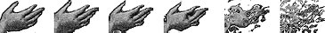

Using Director > Vector Shapes and Bitmaps > Using bitmap filters > Using filters to create animated effects
Using Director > Vector Shapes and Bitmaps > Using bitmap filters > Using filters to create animated effects |
Using filters to create animated effects
You can use Auto Filter to create dramatic animated effects with bitmap filters. Auto Filter applies a filter incrementally to a series of cast members. You can use it either to change a range of selected cast members or to generate a series of new filtered cast members based on a single image. When you define a beginning and ending setting for the filter, Auto Filter applies an intermediate filter value to each cast member.

You can tween a bitmap filter with Auto Filter.
Note: Most filters do not support auto filtering. The Auto Filter dialog box lists only those filters that do.
To use Auto Filter:
1 |
Select a bitmap cast member or a range of cast members and then choose Xtras > Auto Filter. |
If you want to change only a portion of a bitmap cast member, use the Marquee or Lasso tool in the Paint window to select the part you want to change. |
|
2 |
In the Auto Filter dialog box, select a filter. |
3 |
Click Set Starting Values and use the filter controls to enter filter settings for the first cast member in the sequence. |
When you finish working with the filter controls, the Auto Filter dialog box reappears. |
|
4 |
Click Set Ending Values and use the filter controls to enter filter settings for the last cast member in the sequence. |
5 |
Enter the number of new cast members you want to create. The box is not available if you have selected a range of cast members. |
6 |
Click Filter to begin the filtering. |
A message appears to show the progress. Some filters are very complex and require extra time for computing. |
|
Auto Filter generates new cast members and places them in empty cast positions following the cast member you selected. If you selected a range of cast members, no new cast members appear, but the cast members in the range you selected are changed incrementally. |
|